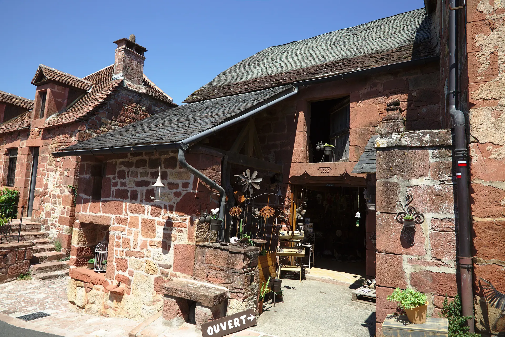
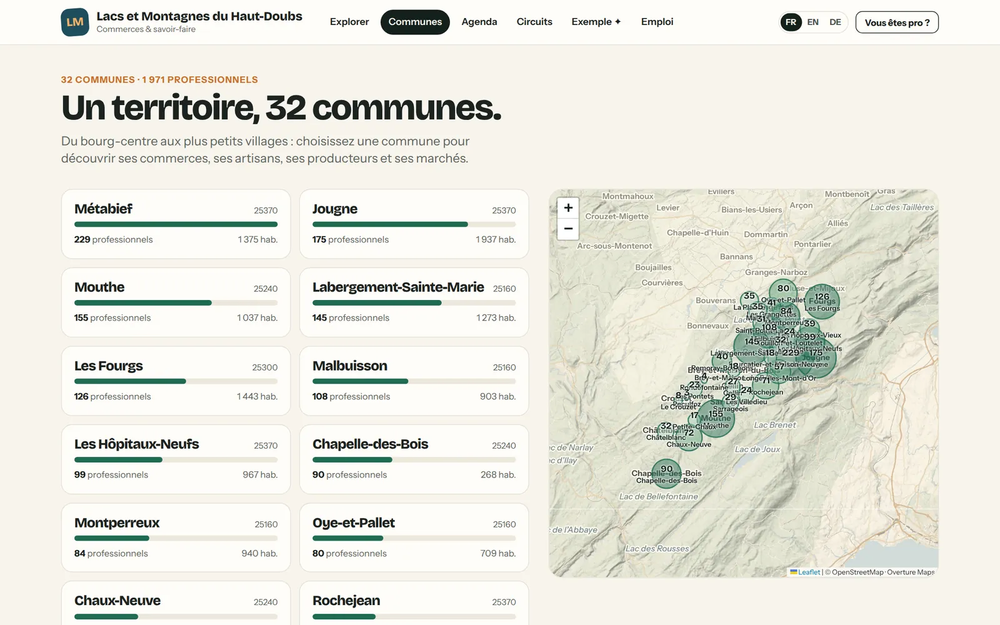

Commencez par votre commune, la communauté suivra.
Une commune peut ouvrir son propre portail, avec ses entreprises et ses rendez-vous. Si sa communauté de communes rejoint ensuite terricom, tout est repris : la commune pionnière ne perd rien.

Le bourg-centre et le hameau, la commune touristique et la commune agricole, le village de montagne et le port de pêche : terricom donne à chacune sa page, ses entreprises, ses rendez-vous. Parce qu’un territoire n’est fort que de toutes ses communes.
Une photo choisie par la mairie, le nombre de professionnels par activité, la carte des entreprises, les opérations commerciales et les prochains rendez-vous : la page d’une commune donne envie de s’y arrêter.
Exemple : Métabief, sur notre territoire de démonstration.
La page des communes présente d’un seul regard la richesse du territoire : chaque commune, son nombre de professionnels, sa place sur la carte. Les habitants découvrent les villages voisins ; les visiteurs, tout ce qu’il y a à voir.
Aucune commune n’est classée au-dessus d’une autre : l’ordre, les couleurs et les mises en avant restent à la main de la collectivité.

Les 32 communes de notre territoire de démonstration.
Chaque mairie qui le souhaite reçoit un accès à son propre espace, avec les droits décidés par la communauté de communes.
Porte et finance le projet, anime les grandes campagnes du territoire, valide les nouvelles entreprises et présente les résultats au conseil communautaire.
Fait vivre sa page, publie son actualité, lance ses propres opérations et relaie les campagnes auprès de ses commerçants, qu’elle connaît mieux que personne.
Une commune peut ouvrir son propre portail, avec ses entreprises et ses rendez-vous. Si sa communauté de communes rejoint ensuite terricom, tout est repris : la commune pionnière ne perd rien.
Nous préparons la démonstration sur vos communes et vos entreprises, avant même notre premier rendez-vous.